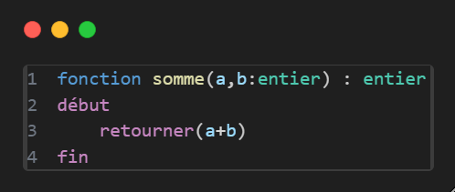
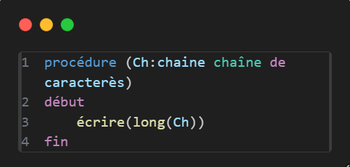

On appelle un module tout bloc de code qui est séparé du programme principal (PP) et qui est utilisé pour diviser le code en petites parties plus faciles à gérer et à déboguer.
On distingue deux types de modules :
Les fonctions
Ce sont comme des machines. Tu leur donnes une ou plusieurs entrées.
Elles te donnent une seule sortie.
Exemple :

Cette fonction prend un nombre a et un nombre b, et retourne leur somme.
Les procédures
Même si elles ressemblent aux fonctions, les procédures sont plutôt des tâches données à l’ordinateur.
Ce ne sont pas forcément des machines avec des entrées et une seule sortie.
Elles peuvent retourner une valeur, mais ce n’est pas obligatoire :
Elles peuvent simplement faire une action sans rien retourner.
Elles peuvent aussi retourner plusieurs retours
Exemple :

Par exemple, ce code prend une chaîne de caractères Ch et affiche sa longueur, sans rien retourner.